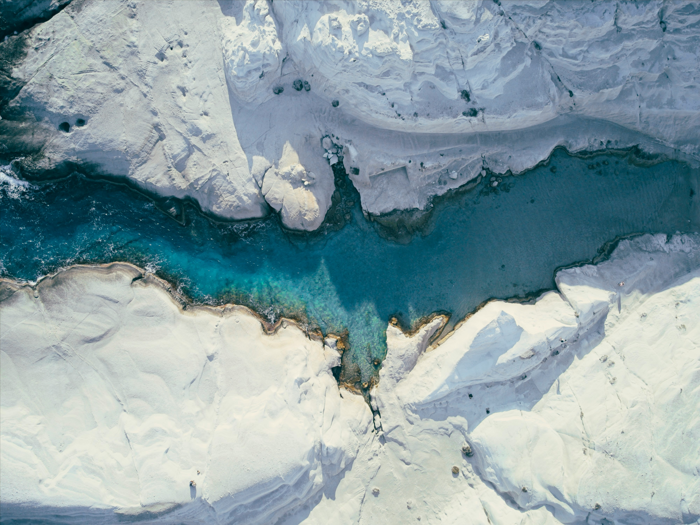
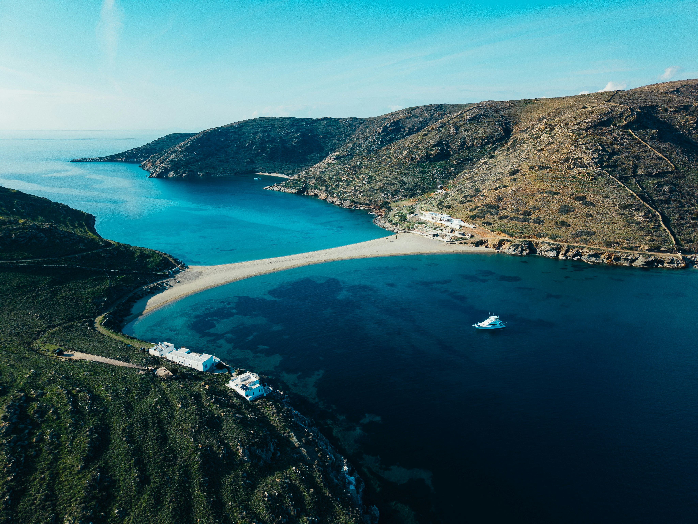
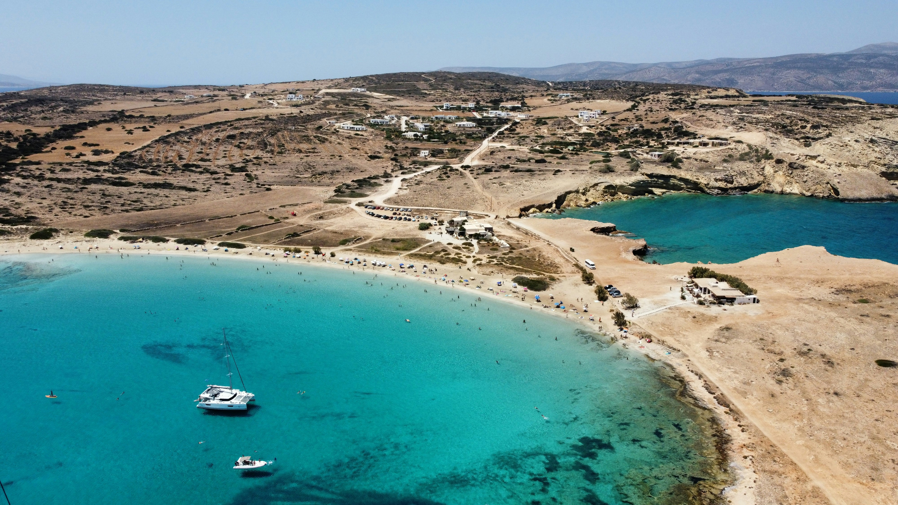
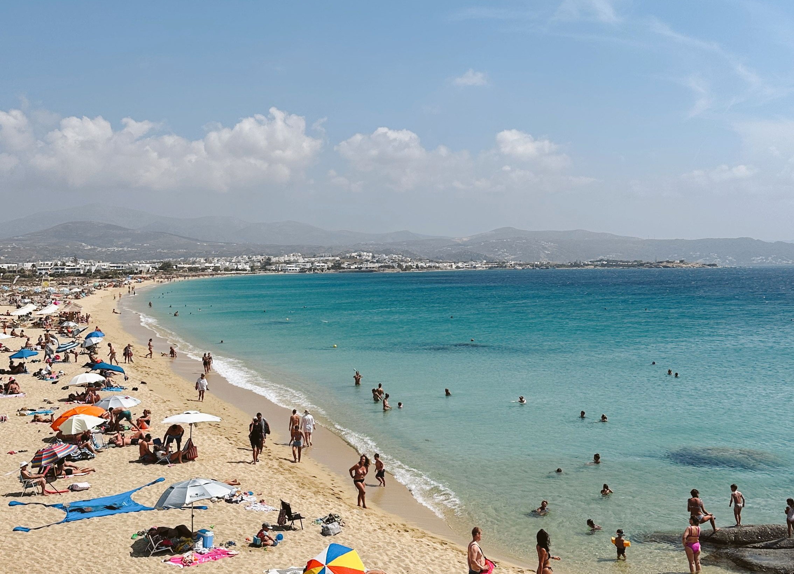
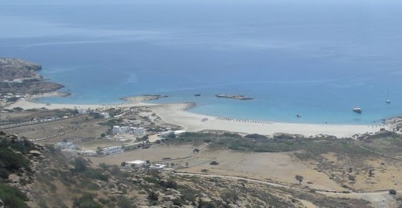
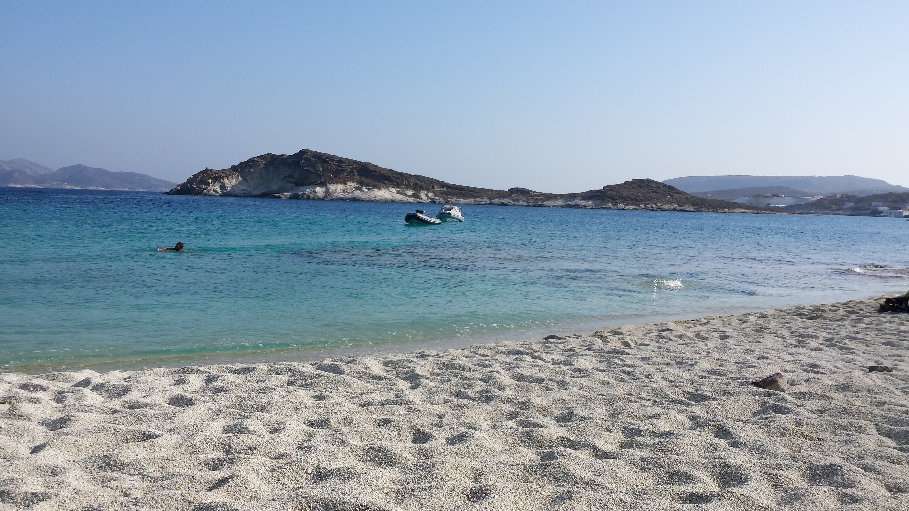
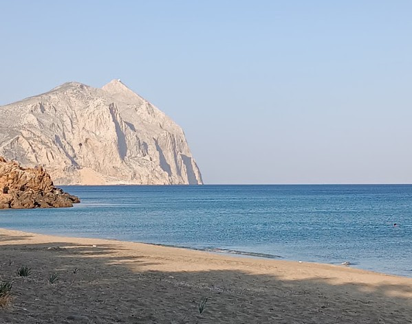
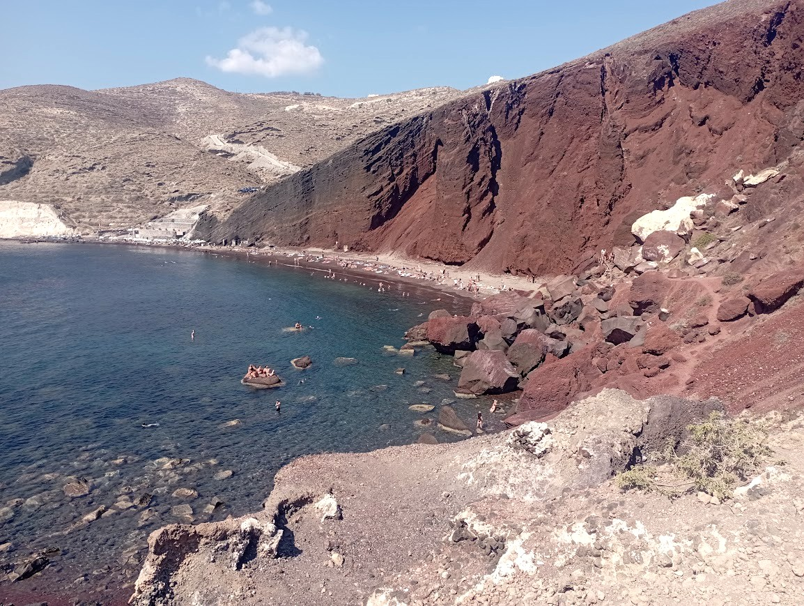
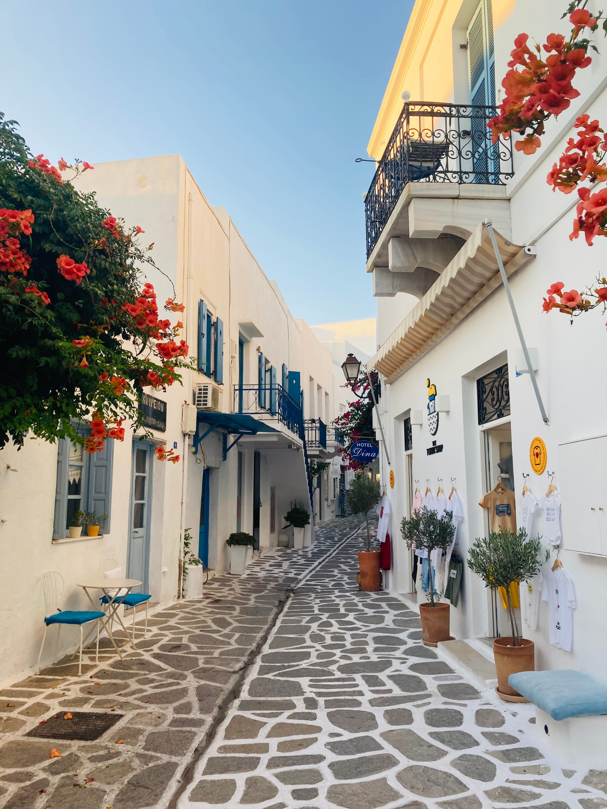
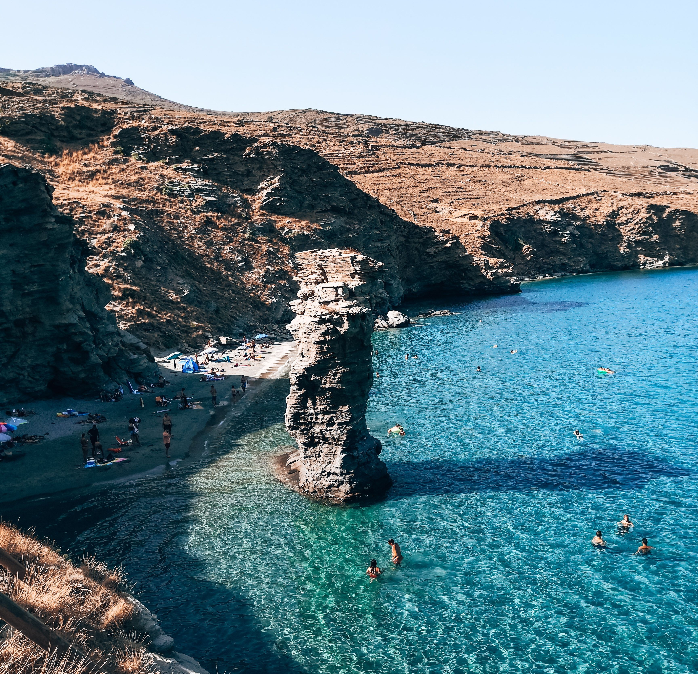

Από απόκοσμα ηφαιστειακά τοπία μέχρι τροπικές αμμουδιές, ανακάλυψε τα πιο μαγικά νερά του Αιγαίου.

Το Σαρακήνικο είναι το πιο φωτογραφημένο μέρος του Αιγαίου. Τα ολόλευκα, λεία ηφαιστειακά πετρώματα έχουν σμιλευτεί από την αλμύρα και τους βοριάδες, δημιουργώντας την ψευδαίσθηση ότι περπατάς στην επιφάνεια της σελήνης. Τα κατακάθαρα τυρκουάζ νερά κάνουν μια συγκλονιστική αντίθεση με το λευκό του βράχου.
Δες τον Οδηγό Μήλου →
Ένα σπάνιο γεωλογικό φαινόμενο. Μια στενή λωρίδα χρυσής άμμου μήκους 240 μέτρων ενώνει το νησί της Κύθνου με τη βραχονησίδα του Αγίου Λουκά. Το αποτέλεσμα είναι μια διπλή παραλία, όπου ο επισκέπτης μπορεί να κολυμπήσει σε δύο διαφορετικούς κόλπους ταυτόχρονα, πάντα προστατευμένος από τα μελτέμια.
Δες τον Οδηγό Κύθνου →
Το Πορί μοιάζει με εξωτική πισίνα της Καραϊβικής μεταφερόμενη στην καρδιά των Κυκλάδων. Πρόκειται για έναν τεράστιο, απάνεμο κόλπο με ψιλή, λευκή άμμο και απίστευτα, διάφανα γαλαζοπράσινα νερά. Πολύ κοντά της βρίσκονται και τα περίφημα γεωλογικά αξιοθέατα «Το Μάτι του Διαβόλου» και το «Γάλα».
Δες τα Κουφονήσια →
Ψηφισμένη επανειλημμένα ως μία από τις ομορφότερες παραλίες της Ευρώπης. Το χαρακτηριστικό της γνώρισμα είναι το πολύ ψιλό, στρογγυλό λευκό βοτσαλάκι που μοιάζει με άμμο αλλά έχει το τεράστιο πλεονέκτημα ότι δεν κολλάει πάνω στο σώμα. Τα νερά της είναι πεντακάθαρα, βαθιά και έχουν ένα μοναδικό έντονο μπλε χρώμα.
Δες τον Οδηγό Νάξου →
Ένα παραδεισένιο σύμπλεγμα από πέντε συνεχόμενους κολπίσκους με χρυσή άμμο και ρηχά, καταπράσινα νερά, ιδανικά για χαλάρωση. Το Μαγγανάρι είναι προστατευμένο από τους ανέμους και προσφέρει μια απίστευτη αίσθηση γαλήνης. Εκεί γυρίστηκαν μερικές από τις πιο εμβληματικές σκηνές της ταινίας «Το Απέραντο Γαλάζιο».
Δες τον Οδηγό Ίου →
Η παραλία των Πράσων είναι διάσημη για την κατάλευκη, χοντρή άμμο της, η οποία οφείλεται στα πετρώματα κιμωλίας του νησιού. Τα νερά της έχουν ένα εντυπωσιακό, φωτεινό τιρκουάζ χρώμα που θυμίζει τροπικό προορισμό. Είναι οργανωμένη με μια μικρή boho καντίνα, διατηρώντας όμως την απόλυτη ηρεμία της.
Δες τον Οδηγό Κιμώλου →
Ο Ρούκουνας δεν είναι απλώς μια παραλία, αλλά ένας θρύλος για τους εναλλακτικούς ταξιδιώτες. Είναι η μεγαλύτερη αμμουδιά του νησιού, με πεντακάθαρα, βαθιά νερά και μεγάλα αρμυρίκια. Αποτελεί το πιο διάσημο σημείο συνάντησης για ελεύθερο camping στην Ελλάδα, προσφέροντας μια μοναδική αίσθηση ελευθερίας.
Δες τον Οδηγό Ανάφης →
Ένα από τα πιο επιβλητικά και απόκοσμα τοπία της Ελλάδας. Η Κόκκινη Παραλία περιβάλλεται από κάθετους, θεόρατους κόκκινους ηφαιστειακούς γκρεμούς που κόβουν την ανάσα. Το σκούρο μπλε της θάλασσας έρχεται σε συγκλονιστική χρωματική αντίθεση με το έντονο κεραμιδί χρώμα της άμμου και των βράχων.
Δες τον Οδηγό Σαντορίνης →
Η Χρυσή Ακτή είναι η μεγαλύτερη και ίσως η πιο εντυπωσιακή αμμουδιά της Πάρου. Η ψιλή άμμος της λαμπιρίζει κάτω από τον ήλιο, δικαιολογώντας απόλυτα το όνομά της. Διαθέτει πεντακάθαρα, ρηχά νερά, ενώ λόγω των ιδανικών ανέμων της περιοχής αποτελεί έναν παγκόσμιο παράδεισο για windsurfing και kitesurfing.
Δες τον Οδηγό Πάρου →
Μία από τις πιο εμβληματικές και viral παραλίες των Κυκλάδων. Το κύριο χαρακτηριστικό της είναι ένας τεράστιος, κατακόρυφος βράχος που ξεπηδά μέσα από το νερό, λίγα μέτρα από την ακτή. Η χρυσή άμμος, τα ρηχά καταπράσινα νερά και ο μύθος που περιβάλλει το όνομά της, την καθιστούν έναν μοναδικό προορισμό.
Δες τον Οδηγό Άνδρου →{kind=link}